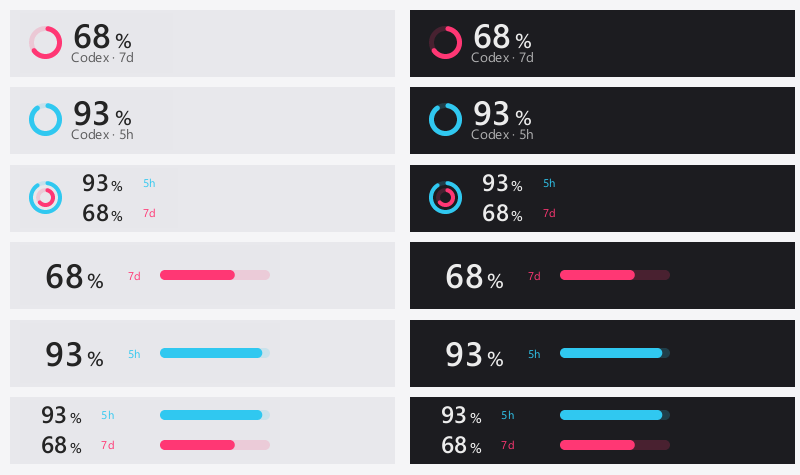
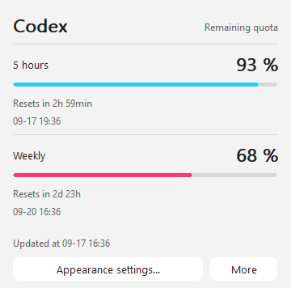
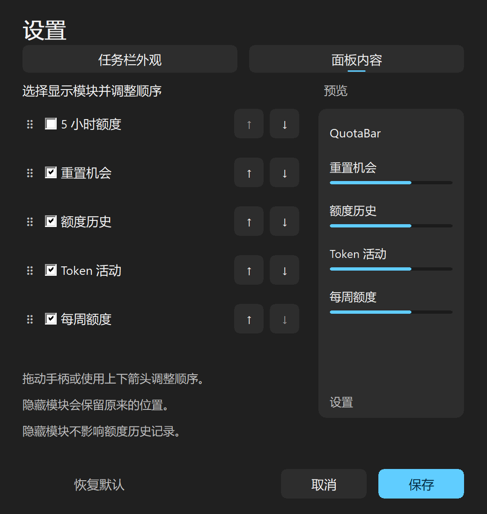

CODEX CLI LOGIN
Existing authentication
Sign in with the official Codex CLI. Base quota requests read its existing credentials without refreshing or rotating them.
QUOTABAR · v0.4.0 · WINDOWS 11
Keep your weekly and 5-hour remaining quota on the taskbar. Choose colorful rings or bars, then click for reset times, local history and Token activity. A lightweight native app with English and Simplified Chinese interfaces.
Download for Windows 11 简体中文说明
GPL-3.0-or-later · Source

01 · QUOTA DETAILS
The detail panel has five independent modules: 5-hour quota, weekly quota, reset opportunities, quota history and Token activity. Click again, click outside or press Esc to close.
History keeps 30 days of real local observations, separated by account. Click a chart for current-cycle, 7-day or 30-day quota views; Token charts offer 7-day and 30-day views.
Missing readings stay missing. Stale data is muted and estimates carry ≈.
A reset timestamp passing alone does not confirm that quota has refreshed.

02 · YOUR TASKBAR
Show the week, 5 hours or both. Dual rings put 5 hours outside and the week inside. The taskbar and tray share your selected style, periods and colors.
Right-click for Appearance settings…. The Taskbar appearance and Panel content pages have live preview, Save and Cancel. Drag modules or use the up/down buttons to reorder them.
Drag the panel horizontally, lock its position or restore automatic placement. It follows Windows themes, DPI, taskbar auto-hide and full-screen visibility. The tray is an explicit menu choice.

03 · SOURCES & STORAGE
Rust, Win32 and CPU vector drawing. No WebView, bundled fonts or continuous app animation. Both quota periods reuse existing requests.
CODEX CLI LOGIN
Sign in with the official Codex CLI. Base quota requests read its existing credentials without refreshing or rotating them.
OPTIONAL EXTENSIONS
Enabled reset and Token modules use the local official Codex App Server, which manages its own authentication. Reads verify the account, cache for five minutes and clean up the helper afterward.
ACCOUNT-ISOLATED HISTORY
Quota observations stay local and continue while their module is hidden. No pre-installation quota history is fabricated; missing Token dates are different from zero.
EXISTING INTEGRATIONS
Claude, Copilot and Antigravity integrations remain available. This version’s taskbar and tray presentation focuses on Codex.
04 · INSTALL
Sign in with the official Codex CLI, then launch ailimits.exe.
This page describes v0.4.0. Public downloads follow the versions actually published on
Releases. Verify downloads with SHA256SUMS.txt.
The bootstrap script downloads the latest published installer and verifies its SHA-256 before running it.
irm https://raw.githubusercontent.com/study-233/ailimits/master/install.ps1 | iex
QuotaBar is not published to winget, Scoop, Chocolatey or Microsoft Store.
Remaining. A full ring or bar means 100% remains; at 0% only the track remains. A missing 5-hour window shows —, without substituting the weekly quota.
Settings stay in %APPDATA%\AiLimits\config.toml, with the local cache and history beside them.
The executable remains ailimits.exe for compatibility. See the privacy details.
Base quota reads do not refresh or rotate CLI tokens. Optional extension reads use the official local Codex App Server, which manages its own authentication. QuotaBar never starts login, logout or model turns, and never consumes reset opportunities.
Install QuotaBar over the existing copy to retain settings, credentials and position. Old 0.6.4 development builds need a first manual upgrade.
Portable copies update manually. Read the upgrade notes.
No. QuotaBar is independently maintained by study-233 and based on AI Limits by napxlexn. It uses its own name and icon and is free software under GPL-3.0-or-later.